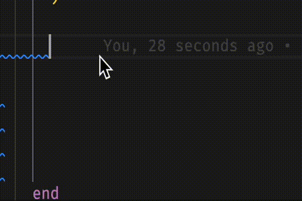

class RubyLsp::Requests::InlayHints

Inlay hints are labels added directly in the code that explicitly show the user something that might otherwise just be implied.
Example¶ ↑
begin puts "do something that might raise" rescue # Label "StandardError" goes here as a bare rescue implies rescuing StandardError puts "handle some rescue" end
Constants
- RESCUE_STRING_LENGTH
- ResponseType
Attributes
response[R]
Public Class Methods
new(range, emitter, message_queue)
click to toggle source
Calls superclass method
RubyLsp::Listener::new
# File lib/ruby_lsp/requests/inlay_hints.rb, line 33 def initialize(range, emitter, message_queue) super(emitter, message_queue) @response = T.let([], ResponseType) @range = range emitter.register(self, :on_rescue) end
Public Instance Methods
on_rescue(node)
click to toggle source
# File lib/ruby_lsp/requests/inlay_hints.rb, line 43 def on_rescue(node) exception = node.exception return unless exception.nil? || exception.exceptions.nil? loc = node.location return unless visible?(node, @range) @response << Interface::InlayHint.new( position: { line: loc.start_line - 1, character: loc.start_column + RESCUE_STRING_LENGTH }, label: "StandardError", padding_left: true, tooltip: "StandardError is implied in a bare rescue", ) end